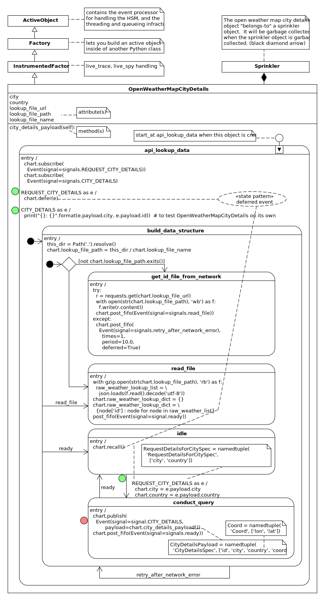
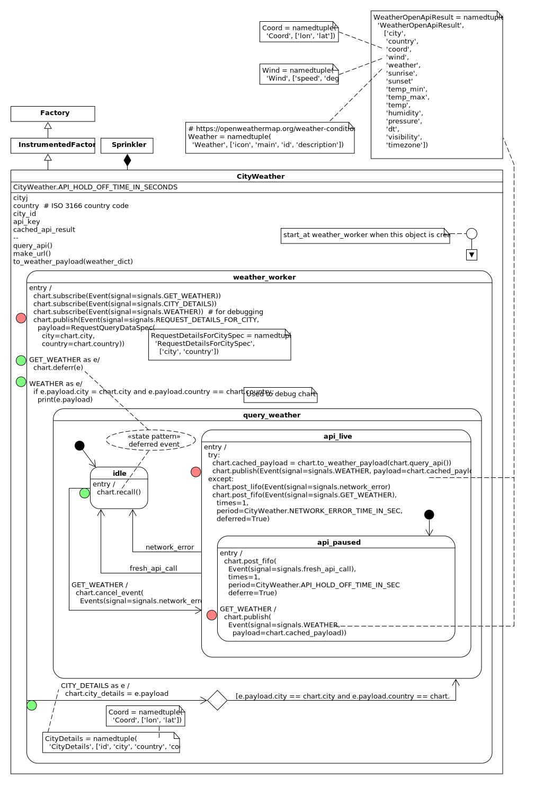

Point of view is worth 80 IQ points
—Alan Kay
Quick Start#
If you know nothing about statecharts, I suggest you start here: zero to one
If you haven’t seen UML diagrams before, scan the understanding diagrams part of this guide to make sense of the pictures.
If you are an embedded developer and want to port your working miros Python code to C/C++ for a considerable performance gain. Check out this project: qp codebase. It is documented here: Practical UML Statecharts in C/C++, 2nd Edition.
In the next section, we will show how to tackle a problem using UML statecharts.
A Networked Sprinkler#
Note
You can look at the example’s code here.
Let’s use the Python miros library to build a sprinkler. This sprinkler will water our plants in the summer, after dark, and only when it is not raining. To do this, we will call out to the open weather API.

Once the networked sprinkler knows which city it’s working in it should just turn on and operate as if it could measure the weather conditions with local instruments.
The open weather documentation recommends that we request city information
using a city ID, so our software should extract this id from a file the open
weather folks have put on their website:
http://bulk.openweathermap.org/sample/city.list.json.gz.
Our design will consist of three different active objects which will work together:
something that will control the sprinkler (Sprinkler).
something that will download a file from the open weather website and extract the correct city ID for a given city and country (OpenWeatherMapCityDetails).
something that will act like a weather station attached to the sprinkler, by making calls to the open weather API (CityWeather).
Here is a high-level diagram of how these parts fit together and what they do:
Note
On interpreting the diagram:
The Sprinkler class will have a CityWeather object and an OpenWeatherMapCityDetails object (black diamond arrows). The CityWeather object will interact with the Sprinkler and OpenWeatherMapCityDetails objects. (dashed lines)
We will use three different statecharts, one per object in the above diagram. Having independent objects interface in a statechart is called orthogonality in statechart theory.
Figuring out what Information will be Passed Around#
Let’s wave our hands and assume that the three active objects used in this designed have been built already and are working, but we want to figure out how they will communicate with one another.
David Harel called such a thing, a statocol (state protocol): what
information will the statecharts need to share, so as a group, they will
achieve our design goal, and give us our networked sprinkler:
We need to figure out how to call the open weather API, with a city-id, before it
returns weather information for its location. This is the problem the
OpenWeatherMapCityDetails object solves: it will provide the city id when we
give it the city and country names of where we have placed the sprinkler.
A rough sketch of the OpenWeatherMapCityDetails object will look like this:
This diagram shows us the input and output goals; for a city and a country return the open weather API’s city id.
OpenWeatherMapCityDetails will subscribe to and receive events called
REQUEST_DETAILS_FOR_CITY. Below this event is the namedtuple,
RequestDetailsForCityPayload. This is the immutable payload that will ride
inside of the event. Likewise, the namedtuple called CityDetailsPayload will
ride inside of the CITY_DETAILS event.
Note
On interpreting the diagram:
All of the high-level event interfaces will look like this one. Arrows going into the rounded rectangle beside the green dots are the published events that the object will consume. Arrows leaving the object, beside each red dot, will be the events it publishes. The namedtuples near the event’s name will describe the payload data structure.
Note
On namedtuples:
The miros library can place any kind of object into an event payload. However event payloads are objects that are shared between threads, we don’t want one thread to change this object while another thread is trying to read it, so as a rule use immutable objects as payloads when programming with miros (to avoid nasty multithreading bugs).
The high-level event interface of the CityWeather object looks like this:
This diagram shows us the CityWeather input and output goals: For a city and
a country get its city id, and when asked, return the weather information for
that city.
Note
On implementation (and sausage making):
I wrote some prototype code, to poke at the open weather city API prior to designing this system. I used the python debugger to break right after receiving a message from their service. I compared what I was seeing with their documentation, then decided on what the payload data structures should look like.
Here is the high-level interface diagram of the Sprinkler:
This diagram shows us the Sprinkler input and output goals: Ask for the
weather and get the weather.
There can be many events which all share the same name; an event’s name is called a signal. An event can also carry a python object with it as a payload. In this design we are limiting ourselves only to send namedtuples as payloads, because they are immutable and provide very nice syntax.
Here is how you would use the miros library to publish (public send) a
REQUEST_DETAILS_FOR_CITY event:
from miros import event
from miros import signals
from collections import namedtuple
# define the REQUEST_DETAILS_FOR_CITY payload type
RequestDetailsForCityPayload = namedtuple('RequestDetailsForCityPayload',
['city', 'country'])
# Assume the CityWeather ActiveObject has been defined elsewhere and is
# working.
city_weather = CityWeather()
# Published an event will have a red dot beside it on the diagram, it
# publishes and the event has to wait somewhere before it is processed (red
# light).
#
# If the 'REQUEST_DETAILS_FOR_CITY' signal name has not been defined before
# miros will define it now. Its signal will be given a signal_number
# attribute and a signal_name attribute equal to 'REQUEST_DETAILS_FOR_CITY'
# (signal name construction happens automatically in miros)
city_weather.publish(
Event(signal=signals.REQUEST_DETAILS_FOR_CITY,
payload=RequestDetailsForCityPayload(city='Vancouver', country='CA')
)
)
# any ActiveObject that has subscribed to REQUEST_DETAILS_FOR_CITY will
# receive the event and react to it. When an event is received which
# was subscribed to on the diagram, it will have a green dot beside it.
# (green light)
To lock down how I want my payloads to look, I would place this in the top part of the robotic sprinkler Python file:
from collections import namedtuple
Coord = namedtuple(
'Coord',
[
'lon',
'lat'
]
)
# uses Coord
CityDetailsPayload = namedtuple(
'CityDetailsPayload',
[
'id',
'country', # ISO 3166
'city',
'coord' # Coord
]
)
RequestDetailsForCityPayload = namedtuple(
'RequestDetailsForCityPayload',
[
'city',
'country' # ISO 3166
]
)
Weather = namedtuple(
'Weather',
[
'icon',
'main',
'id',
'description'
]
)
Wind = namedtuple(
'Wind',
[
'speed',
'deg',
]
)
# uses Weather, Coord
WeatherOpenApiResult = namedtuple(
'WeatherOpenApiResult',
[
'city',
'country', # ISO 3166
'coord', # Coord
'wind', # Wind
'weather', # Weather
'sunrise',
'sunset',
'temp_min',
'temp_max',
'temp',
'humidity',
'pressure'
'dt',
'visibility',
'timezone',
]
)
Now that we have a decent understanding about what information we want to flow in our system let’s focus in on each part.
OpenWeatherMapCityDetails#
Let’s start by looking at the rough sketch of the OpenWeatherMapCityDetails
object again:
We can see that for a city and a country the object should return the city id, and some other city details.
This is how we would like to build the object:
owm = OpenWeatherMapCityDetails(
name='city_details', # used by the trace
live_trace=True # if you want to see the live trace
)
The OpenWeatherMapCityDetails needs to provide a city ID given a city and a
country.
This city ID will be used by the CityWeather object to make a call to the
open web API. The open-weather website contains a compressed file called
city.list.json.gz at
http://bulk.openweathermap.org/sample/city.list.json.gz. If you have a city
name and a country code, you can use this file to look up the city’s id.
I have long term plans to pull the OpenWeatherMapCityDetails object out of
the networked sprinkler and place it on a server somewhere. This is because the
city.list.json.gz file is really big, and I would like to cost reduce my
robotic sprinkler onto processors with very little memory. This means that many
many different CityWeather objects might be making requests for city-ids at
the same time.
I only want to download the city.list.json.gz file if I don’t have it
already, and I would like the OpenWeatherMapCityDetails object to be
resilient to network outages on the Open Weather website. If it can’t download
the file from the Open Weather server, it should wait ten seconds then try
again. While it’s waiting, it should place any request from CityWeather
objects for city-ids into a queue which will be answered once it gets the
information it needs. Once it receives the file, it should answer any of its
queued requests in a first in first out kind of way.
Here is the design, it uses the deferred event statechart pattern.
From the design we can write our code (compacted to fit on the page):
import gzip
import json
import time
import random
from pathlib import Path
from collections import namedtuple
import requests
from miros import Event
from miros import signals
from miros import Factory
from miros import return_status
# ... named tuples defined above, see previous section (removed to make it
# easier to see the OpenWeatherMapCityDetails code
class InstrumentedFactory(Factory):
def __init__(self, name, live_trace=None, live_spy=None):
super().__init__(name)
self.live_trace = False if live_trace == None else live_trace
self.live_spy = False if live_spy == None else live_spy
class OpenWeatherMapCityDetails(InstrumentedFactory):
DEFAULT_LOOKUP_FILE_URL = \
'http://bulk.openweathermap.org/sample/city.list.json.gz'
LOOKUP_FILE_PATH = \
'city_to_id_json.gz'
def __init__(self,
name,
live_trace=None,
live_spy=None,
lookup_file_url=None):
'''
To see the design diagram:
https://aleph2c.github.io/miros/_static/open_weather_map_city_details.pdf
'''
super().__init__(name, live_trace, live_spy)
# setup attributes
self.city = None
self.country = None
self.lookup_file_url = \
OpenWeatherMapCityDetails.DEFAULT_LOOKUP_FILE_URL
self.lookup_file_name = \
OpenWeatherMapCityDetails.LOOKUP_FILE_PATH \
if lookup_file_url == None else lookup_file_url
# define the states, link signals to handlers
self.api_lookup_data = self.create(state="api_lookup_data"). \
catch(signal=signals.ENTRY_SIGNAL,
handler=self.api_lookup_data_entry_signal). \
catch(signal=signals.INIT_SIGNAL,
handler=self.api_lookup_data_init_signal). \
catch(signal=signals.REQUEST_CITY_DETAILS,
handler=self.api_lookup_data_request_city_details). \
catch(signal=signals.CITY_DETAILS,
handler=self.api_lookup_data_city_details). \
to_method()
self.build_data_structure = self.create(state="build_data_structure"). \
catch(signal=signals.ENTRY_SIGNAL,
handler=self.build_data_structure_entry_signal). \
catch(signal=signals.INIT_SIGNAL,
handler=self.build_data_structure_init_signal). \
catch(signal=signals.read_file,
handler=self.build_data_structure_read_file). \
catch(signal=signals.ready,
handler=self.get_id_file_from_network_ready). \
catch(signal=signals.retry_after_network_error,
handler=self.get_id_file_from_network_retry_after_network_error). \
to_method()
self.get_id_file_from_network = \
self.create(state="get_id_file_from_network"). \
catch(signal=signals.ENTRY_SIGNAL,
handler=self.get_id_file_from_network_entry_signal). \
to_method()
self.read_file = self.create(state="read_file"). \
catch(signal=signals.ENTRY_SIGNAL,
handler=self.read_file_entry_signal). \
to_method()
self.idle = self.create(state="idle"). \
catch(signal=signals.ENTRY_SIGNAL,
handler=self.idle_entry_signal). \
catch(signal=signals.REQUEST_CITY_DETAILS,
handler=self.idle_request_city_details). \
to_method()
self.conduct_query = self.create(state="conduct_query"). \
catch(signal=signals.ENTRY_SIGNAL,
handler=self.conduct_query_entry_signal). \
catch(signal=signals.ready,
handler=self.conduct_query_ready). \
to_method()
# add the hierarchy
self.nest(self.api_lookup_data,
parent=None). \
nest(self.build_data_structure,
parent=self.api_lookup_data). \
nest(self.get_id_file_from_network,
parent=self.build_data_structure). \
nest(self.read_file,
parent=self.build_data_structure). \
nest(self.idle,
parent=self.build_data_structure). \
nest(self.conduct_query,
parent=self.build_data_structure)
# start the statechart (fire up a separate thread)
self.start_at(self.api_lookup_data)
def city_details_payload(self):
'''Pull the city details out of the raw_weather_lookup_dict using the
country and city attributes to identify the required item from the
collection
**Returns**:
(CityDetailsPayload): namedtuple containing the city details
needed for the open weather API call
'''
result = None
for _id, _dict in self.raw_weather_lookup_dict.items():
if self.city == _dict['name'] and self.country == _dict['country']:
coord = Coord(lon=_dict['coord']['lon'], lat=_dict['coord']['lon'])
result = CityDetailsPayload(
id=_dict['id'],
city=self.city,
country=self.country,
coord=coord)
break
return result
@staticmethod
def api_lookup_data_entry_signal(chart, e):
status = return_status.HANDLED
chart.subscribe(Event(signal=signals.REQUEST_CITY_DETAILS))
chart.subscribe(Event(signal=signals.CITY_DETAILS)) # debugging
return status
@staticmethod
def api_lookup_data_init_signal(chart, e):
status = chart.trans(chart.build_data_structure)
return status
@staticmethod
def api_lookup_data_request_city_details(chart, e):
status = return_status.HANDLED
chart.defer(e)
return status
@staticmethod
def api_lookup_data_city_details(chart, e):
status = return_status.HANDLED
print("{}: {}".format(e.payload.city, e.payload.id))
return status
@staticmethod
def build_data_structure_entry_signal(chart, e):
status = return_status.HANDLED
this_dir = Path('.').resolve()
chart.lookup_file_path = this_dir / chart.lookup_file_name
return status
@staticmethod
def build_data_structure_init_signal(chart, e):
if not chart.lookup_file_path.exists():
status = chart.trans(chart.get_id_file_from_network)
else:
status = chart.trans(chart.read_file)
return status
@staticmethod
def build_data_structure_read_file(chart, e):
status = chart.trans(chart.read_file)
return status
@staticmethod
def get_id_file_from_network_ready(chart, e):
status = chart.trans(chart.idle)
return status
@staticmethod
def get_id_file_from_network_retry_after_network_error(chart, e):
status = chart.trans(chart.build_data_structure)
return status
@staticmethod
def get_id_file_from_network_entry_signal(chart, e):
status = return_status.HANDLED
try:
r = requests.get(chart.lookup_file_url)
with open(str(chart.lookup_file_path), 'wb') as f:
f.write(r.content)
chart.post_fifo(Event(signal=signals.read_file))
except:
chart.post_fifo(
Event(signal=signals.retry_after_network_error),
times=1,
period=10.0,
deferred=True)
return status
@staticmethod
def read_file_entry_signal(chart, e):
status = return_status.HANDLED
raw_weather_lookup_list = []
with gzip.open(str(chart.lookup_file_path), 'rb') as f:
raw_weather_lookup_list = \
json.loads(f.read().decode('utf-8'))
chart.raw_weather_lookup_dict = {}
chart.raw_weather_lookup_dict = \
{node["id"] : node for node in raw_weather_lookup_list}
chart.post_fifo(Event(signal=signals.ready))
return status
@staticmethod
def idle_entry_signal(chart, e):
status = return_status.HANDLED
chart.recall()
return status
@staticmethod
def idle_request_city_details(chart, e):
chart.city = e.payload.city
chart.country = e.payload.country
status = chart.trans(chart.conduct_query)
return status
@staticmethod
def conduct_query_entry_signal(chart, e):
status = return_status.HANDLED
chart.publish(Event(signal=signals.CITY_DETAILS,
payload=chart.city_details_payload()))
chart.post_fifo(Event(signal=signals.ready))
return status
@staticmethod
def conduct_query_ready(chart, e):
status = chart.trans(chart.idle)
return status
Now that I have a design and its code, I would like to run it independently of the other two objects needed to build the robotic sprinkler:
if __name__ == "__main__":
owm = OpenWeatherMapCityDetails('city_details', live_trace=True)
owm.publish(Event(signal=signals.REQUEST_CITY_DETAILS,
payload=RequestDetailsForCityPayload(city="Vancouver", country="CA")))
owm.publish(Event(signal=signals.REQUEST_CITY_DETAILS,
payload=RequestDetailsForCityPayload(city="Burnaby", country="CA")))
owm.publish(Event(signal=signals.REQUEST_CITY_DETAILS,
payload=RequestDetailsForCityPayload(city="Toronto", country="CA")))
owm.publish(Event(signal=signals.REQUEST_CITY_DETAILS,
payload=RequestDetailsForCityPayload(city="Saskatoon", country="CA")))
time.sleep(5)
To run it, I make sure to delete the compressed file (so the code will be forced to download it again), then I hammer the statechart with a bunch of requests (see above) while it is trying to download and decompress and make sense of the file:
rm *.gz ; python sprinkler.py
Let’s look at what it did, we can see it because we turned on the
OpenWeatherMapCityDetails’s live_trace feature:
[12:09:57] [city_details] e->start_at() top->get_id_file_from_network
[12:09:57] [city_details] e->read_file() get_id_file_from_network->read_file
[12:09:58] [city_details] e->ready() read_file->idle
[12:09:58] [city_details] e->REQUEST_CITY_DETAILS() idle->conduct_query
[12:09:58] [city_details] e->ready() conduct_query->idle
[12:09:58] [city_details] e->REQUEST_CITY_DETAILS() idle->conduct_query
Vancouver: 6173331
[12:09:58] [city_details] e->ready() conduct_query->idle
[12:09:58] [city_details] e->REQUEST_CITY_DETAILS() idle->conduct_query
Toronto: 6167865
[12:09:58] [city_details] e->ready() conduct_query->idle
[12:09:58] [city_details] e->REQUEST_CITY_DETAILS() idle->conduct_query
Burnaby: 5911606
[12:09:58] [city_details] e->ready() conduct_query->idle
Saskatoon: 6141256
We can see that it returned the city codes, but did the chart behave the way wanted it to?
Turning this into a sequence diagram looks like this:
[Statechart: city_details]
top get_id_file_from_network read_file idle conduct_query
+---start_at()->| | | |
| (1) | | | |
| +-read_file()->| | |
| | (2) | | |
| | +-ready()-->| |
| | | (3) | |
| | | +--REQUEST_CITY_DETAILS()->|
| | | | (4) |
| | | +<---------ready()---------|
| | | | (5) |
| | | +--REQUEST_CITY_DETAILS()->|
| | | | (6) |
| | | +<---------ready()---------|
| | | | (7) |
| | | +--REQUEST_CITY_DETAILS()->|
| | | | (8) |
| | | +<---------ready()---------|
| | | | (9) |
| | | +--REQUEST_CITY_DETAILS()->|
| | | | (10) |
| | | +<---------ready()---------|
| | | | (11) |
We can see that the city_details statechart queued the REQUEST_CITY_DETAILS
(4,6,8,10) events until after it had downloaded the city.list.json.qz (1).
So it works as designed.
CityWeather#
Let’s start by looking at the rough sketch of the CityWeather active object
again:
The CityWeather goals are:
for a city and a country get a city id (from the OpenWeatherMapCityDetails) so the open-weather-api can be called for information about this city
to return weather information when it is asked for it.
A CityWeather active object will be built like this:
cw = CityWeather(
name='city_weather', # for trace outputs (logs)
city='Vancouver',
country='CA',
api_key='b35975e18dc93725acb092f7272cc6b8',
live_trace=True) # if you want to see the live trace
You will have to get your own API key (highlighted above) from the Open Weather map website.
Before a CityWeather active object can get the weather, it needs to get the
correct city ID. While it’s waiting around to get this information, it might
start receiving GET_WEATHER events. If this happens it should just queue up
these requests and answer them in the right order when it can. (deferred
event pattern)
There is a chance that while its trying to contact the open weather API, there could be an issue with the network. If this happens it should just wait 5 seconds and re-post the GET_WEATHER event back at itself as if someone from outside of the active object made the request (reminder pattern). However, if a real GET_WEATHER event comes into the object while it’s waiting for this network-error-timer to time out, just cancel this 5-second timer. If we don’t do this, we could end up sending way too many WEATHER events once the network issue clears.
The open weather API asks us not to make more than 1 weather request every 10 seconds. If we send too many requests per minute, the open api server will send us an error message:
{
"cod": 429,
"message": "Your account is temporary blocked due to exceeding of requests
limitation of your subscription type. Please choose the proper subscription
http://openweathermap.org/price"
}
To avoid getting error messages the CityWeather active
object will only make one real call to the open weather servers every 10
seconds, otherwise it just returns its most recently cached weather data.
This provides a kind of time buffer between it in the server.
Note
If this example becomes popular the Open Weather API will issue the above message a lot. You will need to get and get your own API key to make this issue go away.
In the case that a cod 429 error does occur, the CityWeather active object
should behave exactly the same as it would if a network error occurred.
Here is the design:
Here is the CityWeather code based on the above design:
class CityWeather(InstrumentedFactory):
API_HOLD_OFF_TIME_IN_SEC = 10.0
NETWORK_ERROR_RETRY_TIME_IN_SEC = 5.0
def __init__(self,
name,
city,
country,
api_key,
live_trace=None,
live_spy=None):
'''
To see diagram of the CityWeather statechart:
https://aleph2c.github.io/miros/_static/city_weather.pdf
'''
super().__init__(name, live_trace, live_spy)
self.city = city
self.country = country # ISO 3166
self.city_id = None
self.api_key = api_key
self.cached_payload = None
self.weather_worker = self.create(state="weather_worker"). \
catch(signal=signals.ENTRY_SIGNAL,
handler=self.weather_worker_entry_signal). \
catch(signal=signals.GET_WEATHER,
handler=self.weather_worker_get_weather). \
catch(signal=signals.CITY_DETAILS,
handler=self.weather_worker_city_details). \
catch(signal=signals.WEATHER,
handler=self.weather_worker_weather). \
to_method()
self.query_weather = self.create(state="query_weather"). \
catch(signal=signals.INIT_SIGNAL,
handler=self.query_weather_init_signal). \
to_method()
self.idle = self.create(state="idle"). \
catch(signal=signals.ENTRY_SIGNAL,
handler=self.idle_entry_signal). \
catch(signal=signals.GET_WEATHER,
handler=self.idle_get_weather). \
to_method()
self.api_live = self.create(state="api_live"). \
catch(signal=signals.ENTRY_SIGNAL,
handler=self.api_live_entry_signal). \
catch(signal=signals.INIT_SIGNAL,
handler=self.api_live_init_signal). \
catch(signal=signals.fresh_api_call,
handler=self.api_live_fresh_api_call). \
catch(signal=signals.network_error,
handler=self.api_live_network_error). \
to_method()
self.api_paused = self.create(state="api_paused"). \
catch(signal=signals.ENTRY_SIGNAL,
handler=self.api_paused_entry). \
catch(signal=signals.GET_WEATHER,
handler=self.api_paused_get_weather). \
to_method()
self.nest(self.weather_worker, parent=None). \
nest(self.query_weather, parent=self.weather_worker). \
nest(self.idle, parent=self.query_weather). \
nest(self.api_live, parent=self.query_weather). \
nest(self.api_paused, parent=self.api_live)
self.start_at(self.weather_worker)
def query_api(self):
api_query_url=self.make_url()
result = requests.get(api_query_url)
return result.json()
def make_url(self):
'''Make an Open Weather URL to request weather data this object's city and
country
**Note**:
The URL request should look something like this:
http://api.openweathermap.org/data/2.5/
weather?id=6173331&APPID=
b35975e18dc93725acb092f7272cc6b8&units=metric
**Returns**:
(str): the url which you can use with the requests library
'''
query = 'id='+str(self.city_id)
url = 'http://api.openweathermap.org/data/2.5/weather?'
url += query
url += '&APPID='
url += self.api_key
url += '&units=metric'
return url
def to_weather_payload(self, weather_dict):
'''Convert the open web api (as a dict) to the WeatherOpenApiResult.
**Args**:
| ``weather_dict`` (dict): dictionary version of the json structure
| returned from the Open Weather Api service
**Returns**:
(WeatherOpenApiResult): immutable namedtuple of the data
'''
api = weather_dict
api_weather_dict = api['weather'][0]
coord = Coord(lon=api['coord']['lon'], lat=api['coord']['lat'])
weather = Weather(
icon=api_weather_dict['icon'],
main=api_weather_dict['main'],
id=api_weather_dict['id'],
description=api_weather_dict['description']
)
wind = Wind(
speed=api['wind']['speed'],
deg=api['wind']['deg']
)
payload = WeatherOpenApiResult(
city=self.city,
country=self.country,
coord=coord,
wind=wind,
weather=weather,
sunrise=api['sys']['sunrise'],
sunset=api['sys']['sunset'],
temp_min=api['main']['temp_min'],
temp_max=api['main']['temp_max'],
temp=api['main']['temp'],
humidity=api['main']['humidity'],
pressure=api['main']['pressure'],
dt=api['dt'],
visibility=api['visibility'],
timezone=api['timezone'],
)
return payload
@staticmethod
def weather_worker_entry_signal(chart, e):
status = return_status.HANDLED
chart.subscribe(Event(signal=signals.GET_WEATHER))
chart.subscribe(Event(signal=signals.CITY_DETAILS))
chart.subscribe(Event(signal=signals.WEATHER))
chart.publish(Event(signal=signals.REQUEST_CITY_DETAILS,
payload=RequestDetailsForCityPayload(
city=chart.city,
country=chart.country)))
return status
@staticmethod
def weather_worker_get_weather(chart, e):
status = return_status.HANDLED
chart.defer(e)
return status
@staticmethod
def weather_worker_city_details(chart, e):
status = return_status.HANDLED
if e.payload.city == chart.city and \
e.payload.country == e.payload.country:
chart.city_id = e.payload.id
status = chart.trans(chart.query_weather)
return status
@staticmethod
def weather_worker_weather(chart, e):
status = return_status.HANDLED
if e.payload.city == chart.city and \
e.payload.country == chart.country:
print(e.payload)
return status
@staticmethod
def query_weather_init_signal(chart, e):
status = chart.trans(chart.idle)
return status
@staticmethod
def idle_entry_signal(chart, e):
status = return_status.HANDLED
chart.recall()
return status
@staticmethod
def idle_get_weather(chart, e):
chart.cancel_events(
Event(signal=signals.network_error)
)
status = chart.trans(chart.api_live)
return status
@staticmethod
def api_live_entry_signal(chart, e):
status = return_status.HANDLED
try:
weather_results_dict = chart.query_api()
chart.cached_payload = \
chart.to_weather_payload(weather_results_dict)
chart.publish(
Event(
signal=signals.WEATHER,
payload=chart.cached_payload
)
)
except:
chart.post_lifo(Event(signal=signals.network_error))
chart.post_fifo(
Event(signal=signals.GET_WEATHER),
times=1,
period=CityWeather.NETWORK_ERROR_RETRY_TIME_IN_SEC,
deferred=True)
return status
@staticmethod
def api_live_init_signal(chart, e):
status = chart.trans(chart.api_paused)
return status
@staticmethod
def api_live_fresh_api_call(chart, e):
status = chart.trans(chart.idle)
return status
@staticmethod
def api_live_network_error(chart, e):
status = chart.trans(chart.idle)
return status
@staticmethod
def api_paused_entry(chart, e):
status = return_status.HANDLED
chart.post_fifo(
Event(signal=signals.fresh_api_call),
times=1,
period=CityWeather.API_HOLD_OFF_TIME_IN_SEC,
deferred=True
)
return status
@staticmethod
def api_paused_get_weather(chart, e):
status = return_status.HANDLED
chart.publish(
Event(signal=signals.WEATHER,
payload=chart.cached_payload
)
)
return status
I already built the OpenWeatherMapCityDetails object which can return city
ID objects when it’s asked to by CityWeather.
So, to see if the CityWeather object is working, I’ll make both objects and
publish some GET_WEATHER events.
if __name__ == "__main__":
owm = OpenWeatherMapCityDetails('city_details', live_trace=True)
cw = CityWeather(
name='city_weather',
city='Vancouver',
country='CA',
api_key='b35975e18dc93725acb092f7272cc6b8',
live_trace=True)
for i in range(10):
cw.publish(Event(signal=signals.GET_WEATHER))
time.sleep(5)
This produces the following output (edit to fit on this page):
[08:03:49] [city_details] e->start_at() top->read_file
[08:03:49] [city_details] e->ready() read_file->idle
[08:03:49] [city_weather] e->start_at() top->weather_worker
[08:03:49] [city_details] e->REQUEST_CITY_DETAILS() idle->conduct_query
[08:03:49] [city_details] e->ready() conduct_query->idle
[08:03:49] [city_weather] e->CITY_DETAILS() weather_worker->idle
Vancouver: 6173331
[2019-07-04 08:03:49.097032] [city_weather] e->GET_WEATHER() idle->api_paused
WeatherOpenApiResult(
city='Vancouver',
country='CA',
coord=Coord(lon=-123.12, lat=49.25),
wind=Wind(speed=5.7, deg=170),
weather=Weather(
icon='04d',
main='Clouds',
id=803,
description='broken clouds'),
sunrise=1562242385,
sunset=1562300420,
temp_min=13.33,
temp_max=16.11,
temp=14.64,
humidity=82,
pressure=1017,
dt=1562252610,
visibility=16093,
timezone=-25200)
WeatherOpenApiResult ...
WeatherOpenApiResult ...
[08:03:59] [city_weather] e->fresh_api_call() api_paused->idle
[08:04:04] [city_weather] e->GET_WEATHER() idle->api_paused
WeatherOpenApiResult ...
WeatherOpenApiResult ...
WeatherOpenApiResult ...
[08:04:14] [city_weather] e->fresh_api_call() api_paused->idle
[08:04:19] [city_weather] e->GET_WEATHER() idle->api_paused
WeatherOpenApiResult ...
WeatherOpenApiResult ...
WeatherOpenApiResult ...
[08:04:29] [city_weather] e->fresh_api_call() api_paused->idle
[08:04:34] [city_weather] e->GET_WEATHER() idle->api_paused
WeatherOpenApiResult ...
I can see that there is some interaction between the
OpenWeatherMapCityDetails and the CityWeather active objects, and the
CityWeather` is returning the detailed weather information that I’m looking
for, but are the statechart behaving the way I want them too?
It can be difficult to explain how two or more charts are working together directly from a trace.
To make it easier to see and explain I’ll turn the trace output into a set of sequence diagrams:
[Statechart: city_details] (A)
top read_file idle conduct_query
+-start_at()->| | |
| (1) | | |
| +-ready()->| |
| | (3) | |
| | +--REQUEST_CITY_DETAILS()->|
| | | (4) |
| | +<---------ready()---------|
| | | (6) |
[Statechart: city_weather] (B)
top weather_worker idle api_paused
+-start_at()->| | |
| (2) | | |
| +-CITY_DETAILS()->| |
| | (5) | |
| | +----GET_WEATHER()-->|
| | | (7) |
| | +<-fresh_api_call()--|
| | | (8) |
| | +----GET_WEATHER()-->|
| | | (9) |
| | +<-fresh_api_call()--|
| | | (10) |
| | +----GET_WEATHER()-->|
| | | (11) |
| | +<-fresh_api_call()--|
| | | (12) |
| | +----GET_WEATHER()-->|
| | | (13) |
Here is a description of the interaction:
OpenWeatherMapCityDetailsis instantiated and started as city_details in the trace output.CityWeatheris instantiated and started as city_weather in the trace output. The main thread sends aGET_WEATHERevent to the city_weather object, which is queued because it doesn’t have a city id yet, so it can’t request weather information from the Open Weather server.city_details sees that it has a file, so it reads it and transitions to idle. Meanwhile, city_weather publishes the
REQUEST_CITY_DETAILSevent.city_weather receives the
REQUEST_CITY_DETAILSevent and conducts a query, then publishes theCITY_DETAILSevent.city_weather receives
CITY_DETAILS, extracts the city id, then issues arecallon any queueGET_WEATHERevents that were sent to it before it was ready.ready
city_details receives the
GET_WEATHERevent it just posted to itself. This causes it to call the open weather api and it prints the results to the screen (I added code that will do this in this object). While in the api_paused state, it receives 2 more requests for the weather, and it just posts the old weather information instead of calling the server again.city_details 10 second server delay timer times out. It transitions from api_paused to idle. It is ready to call the server for new weather information when it receives its next
GET_WEATHERevent.
The pattern described in 7 and 8 is repeated for the remaining 9-13 calls.
We haven’t tested the network error handling part of our system, but I would say the nominal behavior is working as designed.
Sprinkler#
Let’s start by looking at the rough sketch of the Sprinkler active object again:
The diagram shows us how the sprinkler gets its weather information but it doesn’t tell us what the sprinkler does with this data.
If we ran our code on a raspberry pi, we could connect a wire from one of its break-out pins (GPIO), to a relay. This relay could turn an electrically controlled water valve on/off.
What is cool about this design is that we have imbued an inexpensive electrically controlled water valve with knowledge about the weather, the local time, when the sunrises and when it will set. It knows about the barometric pressure, the local humidity and it has a rough estimate of the GPS coordinates of the sprinkler if you need to turn it off from above.
We will feed the sprinkler some data, so it will know how long to keep the water on, what its API key is, what city and country it is in. The construction of its active object will look like this:
sprinkler = Sprinkler(
name='sprinkler',
city='Vancouver',
country='CA',
api_key='b35975e18dc93725acb092f7272cc6b8',
water_time_sec = 60*60,
live_trace=True)
There is so much we can do, but for now we will keep it simple. The sprinkler will turn on and run for water_time_sec if:
it is sunset, so that our water doesn’t immediately evaporate
if it’s not raining are snowing
if the daily expected minimum temperature is above 0 degrees Celsius.
The weather details will be provided by the Weather event’s payload,
e.payload.weather.id which are described here.

Here is the sprinkler code:
class Sprinkler(InstrumentedFactory):
SPRINKLER_HEART_BEAT_SEC = 5.0
def __init__(self,
name,
city,
country,
api_key,
water_time_sec,
live_trace=None,
live_spy=None):
super().__init__(name, live_trace, live_spy)
self.city_details = OpenWeatherMapCityDetails('city_details')
self.city_weather = CityWeather('city_weather', city, country, api_key)
self.city = city
self.country = country
self.not_raining = None
self.water_time_sec = water_time_sec
self.common_behaviors = self.create(state="common_behaviors"). \
catch(signal=signals.ENTRY_SIGNAL,
handler=self.common_behaviors_entry_signal). \
catch(signal=signals.heart_beat,
handler=self.common_behaviors_heart_beat). \
catch(signal=signals.WEATHER,
handler=self.common_behaviors_weather). \
catch(signal=signals.to_summer,
handler=self.common_behaviors_to_summer). \
to_method()
self.summer = self.create(state="summer"). \
catch(signal=signals.to_winter,
handler=self.summer_to_winter). \
catch(signal=signals.to_summer,
handler=self.summer_to_summer). \
catch(signal=signals.to_day,
handler=self.summer_to_day). \
catch(signal=signals.to_night,
handler=self.summer_to_night). \
to_method()
self.night = self.create(state="night"). \
catch(signal=signals.to_night,
handler=self.night_to_night). \
catch(signal=signals.to_day,
handler=self.night_to_day). \
catch(signal=signals.INIT_SIGNAL,
handler=self.sprinkler_off_init_signal). \
to_method()
self.not_raining_state = self.create(state="not_raining_state"). \
catch(signal=signals.INIT_SIGNAL,
handler=self.not_raining_init_signal). \
catch(signal=signals.EXIT_SIGNAL,
handler=self.not_raining_exit_signal). \
to_method()
self.sprinkler_on = self.create(state="sprinkler_on"). \
catch(signal=signals.ENTRY_SIGNAL,
handler=self.sprinkler_on_entry_signal). \
catch(signal=signals.done_watering,
handler=self.sprinkler_on_done_watering). \
catch(signal=signals.EXIT_SIGNAL,
handler=self.sprinkler_on_exit_signal). \
to_method()
self.sprinkler_off = self.create(state="sprinkler_off"). \
catch(signal=signals.ENTRY_SIGNAL,
handler=self.sprinkler_off_entry_signal). \
to_method()
self.nest(self.common_behaviors, parent=None). \
nest(self.summer, parent=self.common_behaviors). \
nest(self.night, parent=self.summer). \
nest(self.not_raining_state, parent=self.night). \
nest(self.sprinkler_on, parent=self.not_raining_state). \
nest(self.sprinkler_off, parent=self.not_raining_state)
self.start_at(self.common_behaviors)
@staticmethod
def common_behaviors_entry_signal(chart, e):
status = return_status.HANDLED
chart.subscribe(Event(signal=signals.WEATHER))
chart.turn_off_sprinkler()
chart.post_fifo(
Event(signal=signals.heart_beat),
times=0,
period=Sprinkler.SPRINKLER_HEART_BEAT_SEC,
deferred=True)
return status
@staticmethod
def common_behaviors_heart_beat(chart, e):
status = return_status.HANDLED
chart.publish(Event(signal=signals.GET_WEATHER))
return status
@staticmethod
def common_behaviors_weather(chart, e):
status = return_status.HANDLED
# https://openweathermap.org/weather-conditions
if 500 <= e.payload.weather.id <= 531:
chart.not_raining = False
else:
chart.not_raining = True
is_winter = False
is_winter |= 600 <= e.payload.weather.id <= 622
is_winter |= e.payload.weather.id == 511
is_winter |= e.payload.temp_min < 0.0
if is_winter:
chart.post_fifo(Event(signal=signals.to_winter))
else:
chart.post_fifo(Event(signal=signals.to_summer))
if e.payload.dt > e.payload.sunset:
chart.post_fifo(Event(signal=signals.to_night))
else:
chart.post_fifo(Event(signal=signals.to_day))
return status
@staticmethod
def common_behaviors_to_summer(chart, e):
status = chart.trans(chart.summer)
return status
@staticmethod
def summer_to_winter(chart, e):
status = chart.trans(chart.common_behaviors)
return status
@staticmethod
def summer_to_summer(chart, e):
status = return_status.HANDLED
return status
@staticmethod
def summer_to_day(chart, e):
status = return_status.HANDLED
return status
@staticmethod
def summer_to_night(chart, e):
status = chart.trans(chart.night)
return status
@staticmethod
def night_to_night(chart, e):
status = return_status.HANDLED
return status
@staticmethod
def night_to_day(chart, e):
status = chart.trans(chart.summer)
return status
@staticmethod
def sprinkler_off_init_signal(chart, e):
status = return_status.HANDLED
if chart.not_raining:
status = chart.trans(chart.not_raining_state)
return status
@staticmethod
def not_raining_init_signal(chart, e):
status = chart.trans(chart.sprinkler_on)
return status
def not_raining_exit_signal(chart, e):
status = return_status.HANDLED
chart.cancel_events(Event(signal=signals.done_watering))
return status
@staticmethod
def sprinkler_on_entry_signal(chart, e):
status = return_status.HANDLED
chart.turn_on_sprinkler()
chart.post_fifo(
Event(signal=signals.done_watering),
times=1,
period=chart.water_time_sec,
deferred=True)
return status
@staticmethod
def sprinkler_on_done_watering(chart, e):
status = chart.trans(chart.sprinkler_off)
return status
@staticmethod
def sprinkler_on_exit_signal(chart, e):
status = return_status.HANDLED
chart.turn_off_sprinkler()
return status
@staticmethod
def sprinkler_off_entry_signal(chart, e):
status = return_status.HANDLED
chart.turn_off_sprinkler()
return status
def turn_on_sprinkler(self):
'''turn our sprinkler on'''
print('turn the sprinkler on')
def turn_off_sprinkler(self):
'''turn our sprinkler off'''
print('turn the sprinkler off')
To test the code I wrote this at the bottom of the sprinkler.py file (which contains the entire example if you want to look at it):
sprinkler = Sprinkler(
name='sprinkler',
city='Vancouver',
country='CA',
api_key='b35975e18dc93725acb092f7272cc6b8',
water_time_sec = 10,
live_trace=True)
I ran this code at night, after dark, when it was not raining and in the summer I saw this output:
turn the sprinkler off
[22:12:14] [sprinkler] e->start_at() top->common_behaviors
Vancouver: 6173331
[22:12:20] [sprinkler] e->to_summer() common_behaviors->summer
turn the sprinkler on
[22:12:20] [sprinkler] e->to_night() summer->sprinkler_on
turn the sprinkler off
turn the sprinkler off
[22:12:30] [sprinkler] e->done_watering() sprinkler_on->sprinkler_off
Expressed as a sequence diagram:
[Statechart: sprinkler]
top common_behaviors summer sprinkler_on sprinkler_off
+-start_at()->| | | |
| (1) | | | |
| +-to_summer()->| | |
| | (2) | | |
| | +-to_night()->| |
| | | (3) | |
| | | +--done_watering()>|
| | | | (4) |
The sprinkler active object started. It created a five second
heart_beatmultishot, which will run until the program is stopped, to request weather information every time it is triggered. After the first heart beat event was fired, aGET_WEATHERevent was sent out. Upon receiving the resultingWEATHERevent, its payload was examined and ato_summerandto_nightevents were placed in the first in first output buffer of the sprinkler’s statechart (reminder pattern).The
to_summerevent was reacted to causing a transition into the summer state.The
to_nightevent was reacted to causing transition into thesprinkler_onstate. (it wasn’t at the time of the lastWEATHERevent).Ten seconds elapses and the sprinkler turns off.
We can see that our sprinkler worked after dark. I ran the code the next morning to see what would happen:
turn the sprinkler off
[06:03:56.86] [sprinkler] e->start_at() top->common_behaviors
Vancouver: 6173331
[06:04:02.056] [sprinkler] e->to_summer() common_behaviors->summer
It didn’t turn on the sprinkler and that’s what we wanted.
Note
Refactoring ideas:
Now that we have finished the example let’s look at ways to improve it:
You could simplify this design by getting rid of the
OpenWeatherMapCityDetails, it is not needed: When I was halfway through
building the example, I noticed that you can call the open weather API with a
city and a country at the same time. This means you don’t need a city id to
make a query, so you don’t need the OpenWeatherMapCityDetails active object.
But, I left the OpenWeatherMapCityDetails active object in the example to
show how to build, then gate-keep, resource-access inside of an active object.
In this case the resource was a file that had to be downloaded and decompressed.
But a resource could be a database, or a peripheral, or anything that could only
be handled by one thread at a time.
Then I came up with a contrived reason (future plans) about why this resource
would be needed by many different client active-objects, and how you could serve
these different clients while only letting one of them manipulate the resource
at a time. But the feature wasn’t needed, so you could simplify the
OpenWeatherMapCityDetails active object to make a better product.
The decision to allow multiple clients to access the
OpenWeatherMapCityDetails at the same time made the CityWeather more
complicated than it needed to be. When it received some CITY_DETAILS event,
it needed to check to see if it was one that had the same city and country
details that were stored in its attributes. This kind of check wouldn’t be
needed if the OpenWeatherMapCityDetails only served the one CityWeather
active object, or better yet, get rid of the need to get the details entirely
and just call the Open Weather API with the country and city instead of using
the city-id.
If we got rid of the OpenWeatherMapCityDetails active object we would reduce
the sprinkler.py file size
by at least 126 lines (16 percent).